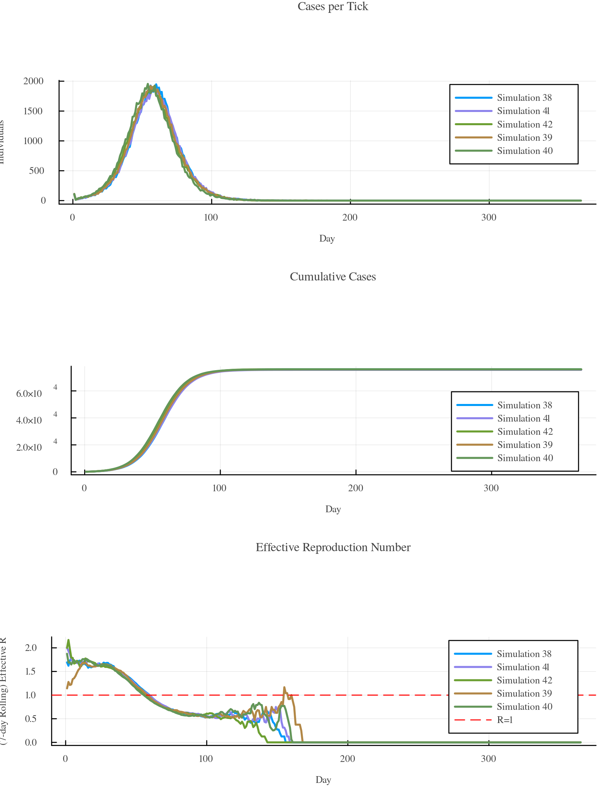
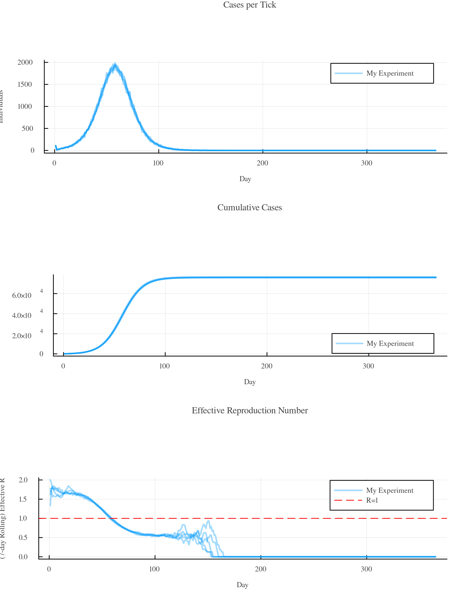
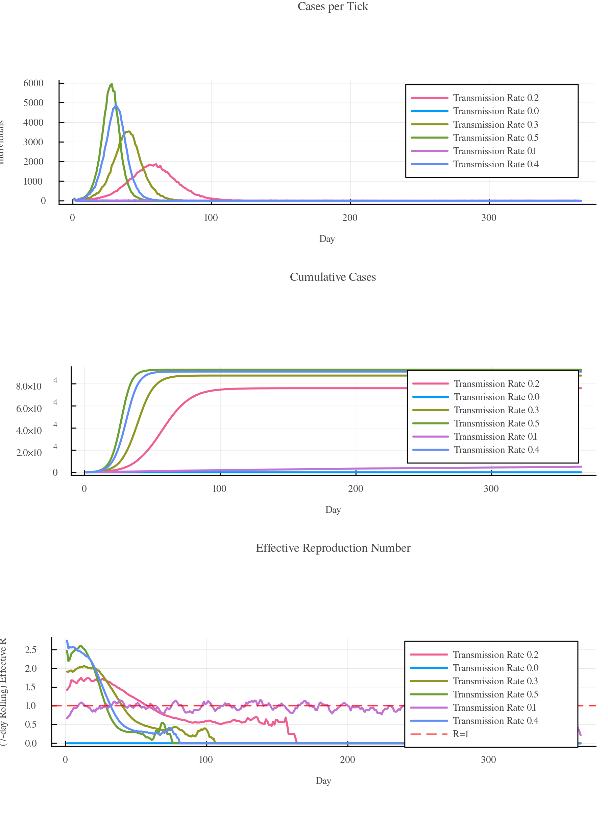
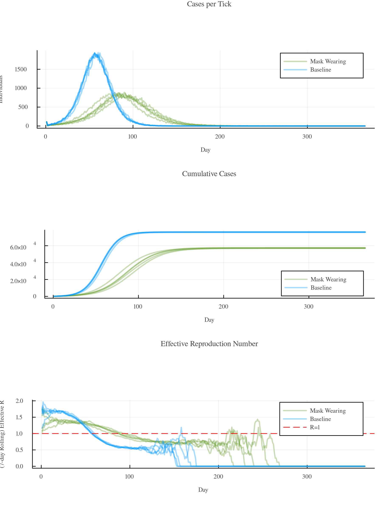
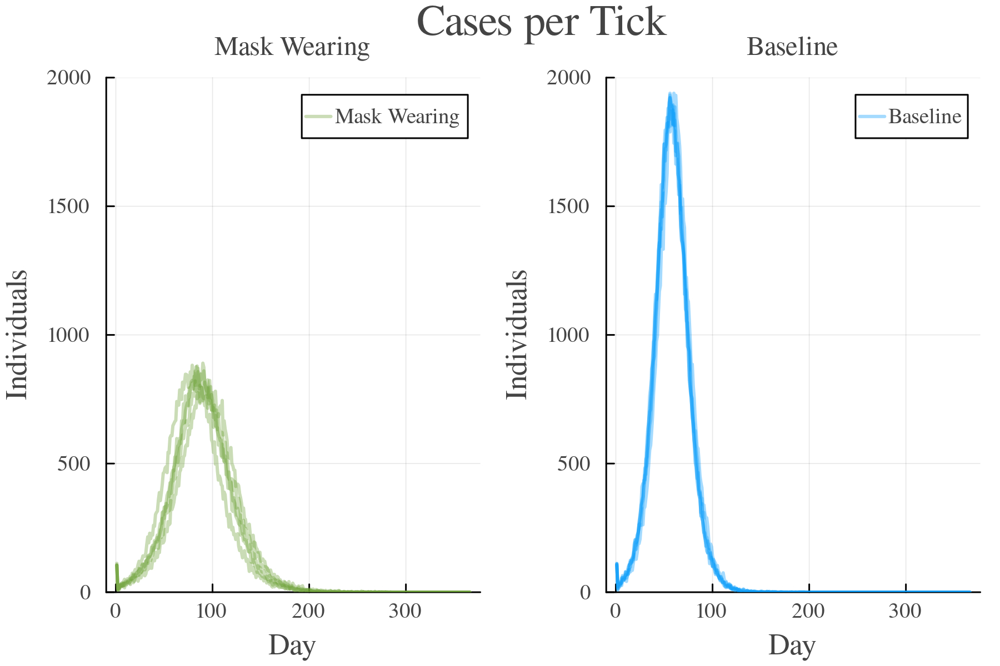
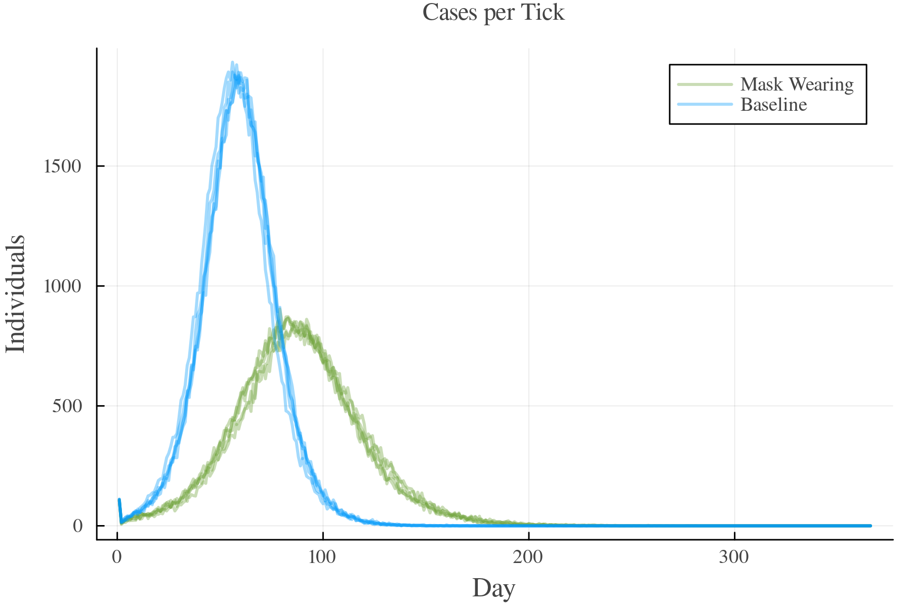
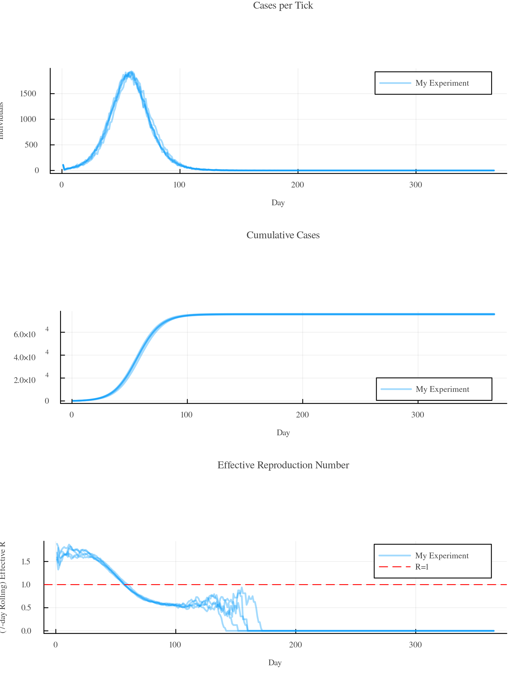

4 - Running Batches
In most situations, running a simulation once is not sufficient. This tutorial teaches you how to work with so-called batches of simulations.
Repeating Simulations
You can instantiate a simulation multiple times and add them to a vector. The Batch(...) function creates a batch from multiple simulations. Running and post-processing of a batch works the same as for single simulations. Note that the rd variable in the example below now contains a vector of ResultData objects.
using GEMS
sims = Simulation[]
for i in 1:5
sim = Simulation()
push!(sims, sim)
end
b = Batch(sims...)
run!(b)
rd = ResultData(b)
gemsplot(rd)Plot

Simulation runs are automatically named (Simulation 1, Simulation 2, ...) if no explicit label is provided. Passing a label keyword to the Simulation() function causes all simulation results of the same label to be grouped:
using GEMS
sims = Simulation[]
for i in 1:5
sim = Simulation(label = "My Experiment")
push!(sims, sim)
end
b = Batch(sims...)
run!(b)
rd = ResultData(b)
gemsplot(rd)Plot

Sweeping Parameter Spaces
If you want to run simulations and systematically scan parameter spaces, you can use batches to do just that. Here's an example of how to run a basic simulation with varying transmission_rates:
using GEMS
sims = Simulation[]
for i in 0:0.1:0.5
sim = Simulation(transmission_rate = i, label = "Transmission Rate $i")
push!(sims, sim)
end
b = Batch(sims...)
run!(b)
rd = ResultData(b)
gemsplot(rd, legend = :topright)Plot

You can also vary multiple parameters at once and show the results in a heatmap. This example runs simulations varying the transmission_rate and time_to_recovery, and plots the calculated r0 value of all combinations in a heatmap:
using GEMS
xvals = []
yvals = []
outvals = []
# vary transmission rate
for tr in 0.1:0.01:0.2
# vary time to recovery
for rec in 2:10
sim = Simulation(transmission_rate = tr, time_to_recovery = rec)
run!(sim)
rd = ResultData(sim, style = "LightRD")
# extract data for heatmap
push!(xvals, tr)
push!(yvals, rec)
push!(outvals, r0(rd))
end
end
gemsheatmap(xvals, yvals, outvals,
xlabel = "Transmission Rate",
ylabel = "Time to Recovery (Days)",
colorbar_title = "Basic Reproduction Number",
color = :r0) Plot

You can enclose the experiment in another loop, running each combination as many times as you want. The gemsheatmap() function can take multiple entries of the same (xvals, yvals) combinations. It automatically generates the mean value across observations. You can also change the aggregation function. Please lookup the gemsheatmap() documentation.
Running Scenarios
GEMS' batch functionalities offer easy options to compare different scenarios and run multiple simulations for each of them. The example below compares a baseline scenario with a scenario with a lower transmission_rate and we assume that this is due to mask-wearing mandates. It spawns five simulations for each of the scenarios and puts them into the same batch, runs it, and visualizes the processed results:
using GEMS
sims = Simulation[]
for i in 1:5
baseline = Simulation(transmission_rate = 0.2, label = "Baseline")
masks = Simulation(transmission_rate = 0.15, label = "Mask Wearing")
push!(sims, baseline)
push!(sims, masks)
end
b = Batch(sims...)
run!(b)
rd = ResultData(b)
gemsplot(rd)Plot

Use the combined = :bylabel keyword to show both scenarios side-by-side (pass the ylims attribute to unify axis-scaling):
gemsplot(rd, type = :TickCases, combined = :bylabel, ylims = (0, 2000))Plot

Of course, all of this can also be done with much more complex intervention strategies. Please look up the interventions tutorial for examples.
Merging Batches
Sometimes it's easier to build up batches individually and then merge them into one for execution. Here's an example of how that can be done based on the scenario of the previous chapter:
using GEMS
sims1 = Simulation[]
for i in 1:5
baseline = Simulation(transmission_rate = 0.2, label = "Baseline")
push!(sims1, baseline)
end
b1 = Batch(sims1...)
sims2 = Simulation[]
for i in 1:5
masks = Simulation(transmission_rate = 0.15, label = "Mask Wearing")
push!(sims2, masks)
end
b2 = Batch(sims2...)
combined_batch = merge(b1, b2)
run!(combined_batch)
rd = ResultData(combined_batch)
gemsplot(rd, type = :TickCases)Plot

BatchData Objects
While ResultData objects are the processed output of single simulation runs, BatchData objects are processed output of Batches. They contain aggregated data on the simulations, e.g., the average number of total infections including standard deviation, confidence intervals and ranges. While you do not necessarily need a BatchData object to plot batches, they do contain a lot of helpful data. Here's an example:
using GEMS
sims = Simulation[]
for i in 1:5
sim = Simulation(label = "My Experiment")
push!(sims, sim)
end
b = Batch(sims...)
run!(b)
bd = BatchData(b)
total_infections(bd)Output
[ Info: 23:32:43 | Initializing Simulation [My Experiment] with default configuration
...
[ Info: 23:32:56 | Running Simulation 1/5 [My Experiment]
[ Info: 23:32:57 | Running Simulation My Experiment
100.0%┣████████████████████████████████████████┫ 365 days/365 days [00:30<00:00, 12 days/s]
...
[ Info: 23:35:44 | Processing Simulation 1/5 in Batch
...
Dict{String, Real} with 6 entries:
"upper_95" => 76052.5
"max" => 76088
"min" => 75363
"lower_95" => 75415.1
"mean" => 75733.8
"std" => 256.672Run the info(...) function to get an overview of values that you can retrieve from a BatchData object by calling a function of the same name (e.g., total_infections(...)) on the BatchData object:
info(bd)Output
BatchData Entries
└ meta_data
└ GEMS_version
└ id
└ execution_date
└ dataframes
└ tick_cases
└ effectiveR
└ cumulative_disease_progressions
└ cumulative_quarantines
└ tests
└ sim_data
└ total_tests
└ number_of_runs
└ attack_rate
└ total_infections
└ total_quarantines
└ runs
└ system_data
...It's also possible to directly pass BatchData objects to the gemsplot() function:
gemsplot(bd)Plot

A BatchData object contains ResultData objects for each of the individual runs. Creating a BatchData object from a Batch (as in the example above), triggers the post processing for each of the simulations contained in the batch, i.e., generating their ResultData objects. You can access them like this:
runs(bd)Output
5-element Vector{ResultData}:
ResultData Object
└ Dataframes inside: 22
└ Config file: DefaultConf.toml
└ Pathogens: ["Covid19"]
└ Population file: Not available.
└ Individuals: 100000
└ Settings: ["Household", "SchoolClass", "Office"]
└ Simulation:
└ Total infections: 75363
└ Attack rate: 0.75363
└ Total quarantine days: 0
└ Total tests: NamedTuple()
└ Test detection rate: 0.0
...However, these ResultData objects are generated using the batch-optimized LightRD style (look up the tutorial on ResultDataStyles). This style does not store raw data (such as the infections dataframe) as they are usually not particularly relevant for batches, reducing the required memory significantly.
If you still want the raw data for each of the simulation runs, you can pass the DefaultResultData style to the BatchData(...) function. Have a look at this example showing how to still get the raw data when working with batches:
bd = BatchData(b, rd_style = "DefaultResultData")
rns = runs(bd)
infections(rns[1])Output
[ Info: 23:38:51 | Processing Simulation 1/5 in Batch
[ Info: 23:38:55 | Processing Simulation 2/5 in Batch
[ Info: 23:38:59 | Processing Simulation 3/5 in Batch
[ Info: 23:39:03 | Processing Simulation 4/5 in Batch
[ Info: 23:39:07 | Processing Simulation 5/5 in Batch
23:39:12 | └ Done
75363×47 DataFrame
Row │ infection_id tick id_a id_b infectious_tick removed_tick ⋯
│ Int32 Int16 Int32 Int32 Int16 Int16 ⋯
┼───────────────────────────────────────────────────────────────────────
1 │ 1134 17 88197 1 17 ⋯
2 │ 35969 56 59946 2 60 ⋯
⋮ | ⋮ ⋮ ⋮ ⋮ ⋮ ⋮ ⋮
75362 │ 36576 56 22625 99999 56
75363 │ 7133 34 92825 100000 36 ⋯
38 columns and 75359 rows omittedCustom BatchDataStyles
t.b.d.